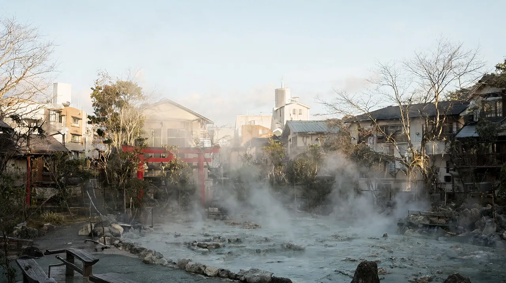

벳푸 여행 가이드
지옥순례와 온천, 모래찜질을 하루 안에 즐기는 규슈 동부 온천 도시 (직항은 대한항공 동계 한정)

확인하지 못한 값은 '확인 필요'로 남겼고, 출처 이름은 괄호로 달았습니다. 엔화 환산은 2026-10-21 시장 중간환율 100엔 837.70원(환율노트) 기준의 약 값입니다. 현찰 환전은 수수료 때문에 이보다 비쌉니다.
땅에서 솟는 뜨거운 물을 눈으로 보는 지옥순례, 지구별로 골라 들어가는 시영 온천, 바닷가 모래찜질이 한 도시 안에 모여 있습니다. 인천 직항은 대한항공이 겨울철에만 주 4회 띄웁니다.
- 도시: 벳푸 (규슈 동북부 오이타현에 있는 온천 도시)
한눈에 보기
| 항목 | 내용 | 근거 |
|---|---|---|
| 추천 일수 | 3박 4일 (2박 3일도 가능) | 오이타 도착이 10:50, 귀국편 출발이 12:00이라 첫날 오후와 마지막 날 오전만 쓸 수 있습니다 (대한항공 공식 발표) |
| 비행시간 | 인천 출발 직항 약 1시간 35분 | 출발 09:15, 도착 10:50의 시각 차 (대한항공 공식 발표) |
| 아이 적합도 | 높음 | 지옥순례의 색깔 있는 연못과 간헐천, 수족관, 원숭이 공원이 가깝습니다. 온천 대욕장은 아이 동반 주의가 필요합니다 (벳푸시 공식 안내) |
| 환율 기준 | 100엔 = 837.70원 (2026-10-21) | 환율노트 |
규슈 권역 페이지의 벳푸 행과 같은 값입니다. 직항은 동계 한정, 비행시간 약 1시간 35분, 3박 4일 추천, 1인 약 45~80만원입니다.
이 도시가 맞는 사람
맞는 유형
- 온천을 눈으로 보는 체험(지옥순례)과 몸을 담그는 체험(시영 온천, 모래찜질)을 한 번에 해 보고 싶은 가족
- 조용한 료칸 한 곳보다 숙소 가격대가 넓은 도시에서 예산에 맞게 고르고 싶은 가족
- 오이타공항으로 들어와 유후인, 아소, 구마모토로 이어 가는 여러 도시 일정을 생각하는 가족
- 수족관, 원숭이 공원, 놀이공원처럼 아이가 좋아할 야외 시설을 온천과 묶고 싶은 가족
덜 맞는 유형
- 유후인이나 구로카와처럼 숙소 안에서 조용히 하루를 보내려는 가족. 벳푸는 번화가가 있는 시가지 온천 도시라 분위기가 다릅니다.
- 쇼핑과 밤 놀거리가 중심인 여행. 저녁 6~7시면 문을 닫는 상점가 구역이 많습니다 (비공식 정리).
- 날짜 선택 폭이 중요한 경우. 직항은 겨울철 주 4회뿐입니다. 부산 직항은 현재 확인되지 않았습니다.
벳푸, 유후인, 구로카와 비교
| 구분 | 벳푸 | 유후인 | 구로카와 |
|---|---|---|---|
| 성격 | 온천 도시. 온천 지구가 여덟 곳 | 호수와 상점가가 있는 온천 마을 | 산속 온천 마을 |
| 이동 | JR 닛포 본선 벳푸역, 하카타에서 특급 약 2시간 | 벳푸에서 버스 약 1시간 | 철도 없음, 버스 또는 렌터카 |
| 아이와 함께 | 볼거리가 많아 하루 단위로 일정 짜기 쉬움 | 산책 중심, 비교적 조용 | 노천탕 체험 중심, 차 이동 필요 |
공항에서 시내까지
직항 노선 (2026-10-22 확인)
| 항공사 | 편명 | 인천 출발 → 오이타 도착 | 오이타 출발 → 인천 도착 | 운항 요일 | 기간 |
|---|---|---|---|---|---|
| 대한항공 | 예약 시 확인 | 09:15 → 10:50 | 12:00 → 13:45 | 월·수·금·일 (주 4회) | 2026-10-25 ~ 2027-03-26 (동계) |
- 출처는 대한항공 공식 발표(2026-09-11 뉴스룸)와 이를 보도한 전자신문, 경기일보입니다. 기종은 소형 협동체기(182석)로 알려져 있습니다.
- 부산-오이타는 2026년 10월 현재 정기 직항이 확인되지 않았습니다. 과거에 부산에서 주 3회 운항한 기록이 있으나(부산시보 2018) 지금도 뜨는지는 오이타공항 공식 사이트가 점검 중이라 확인하지 못했습니다. 확인 필요입니다.
- 직항이 없는 날은 후쿠오카로 들어가 하카타에서 특급 열차나 고속버스로 오는 방법이 현실적입니다. 아래 표를 보세요.
오이타공항에서 벳푸까지
오이타공항에는 철도가 없어서 공항버스가 기본입니다. 공항 공식 사이트가 2026-10-22에 점검 중이라 요금과 시간표는 비공식 값입니다. 출발 전에 공식 사이트에서 다시 확인하세요.
| 노선 | 소요시간 | 요금(편도, 어른) | 막차·메모 | 추천 대상 |
|---|---|---|---|---|
| 공항 리무진 버스(오이타교통) → 벳푸역 앞 | 약 47~56분 (비공식 시간표) | 약 1,600엔 (약 13,400원, 비공식. 공식 요금은 확인 필요) | 하루 6편 안팎 (비공식). 막차는 확인 필요 | 대부분의 가족 |
| 공항 버스 → 오이타역 → JR 닛포 본선 | 버스 약 45분 + 열차 약 15~20분 | 버스 요금 확인 필요, 열차 240엔 안팎 (비공식) | 편수가 적고 환승이 번거로움 | 오이타 시내를 함께 볼 때 |
| 렌터카 | 약 40분 (비공식) | 확인 필요 | 유후인, 아소로 이어 갈 때 유리 | 여러 도시 일정 가족 |
- 공항버스는 비행기 도착 시각에 맞춘 운행이 아니라 대략 한 시간 간격입니다 (유후인 쪽 숙소 안내). 늦은 도착이면 막차를 꼭 확인하세요.
- 국제선 터미널은 국내선 터미널 가까이에 있는 작은 규모입니다 (후기, 비공식).
후쿠오카에서 오는 방법
| 수단 | 구간 | 소요시간 | 요금(편도, 어른) | 메모 |
|---|---|---|---|---|
| 특급 소닉 (JR 닛포 본선) | 하카타역 → 벳푸역, 환승 없음 | 약 2시간~2시간 30분 (비공식 시간표) | 약 6,380~6,910엔 (비공식). 인터넷 할인권이 더 쌈 | 소닉은 신칸센이 아니라 JR 특급 열차입니다. 규슈 신칸센은 벳푸 쪽으로 가지 않습니다. 첫차 05:21, 막차 21:51 (비공식) |
| 고속버스 도요노쿠니호 | 후쿠오카공항 국제선, 하카타, 텐진 → 벳푸 기타하마 | 약 2시간 10~20분 | 약 3,250엔 (약 27,200원, 비공식). 4매 회수권 10,000엔 | 첫차 9:42, 막차 21:42 (비공식). 좌석 지정제라 매진되면 현장 탑승이 어렵습니다 |
| 렌터카 | 후쿠오카 → 벳푸 | 약 2시간~2시간 30분 | 확인 필요 | 유후인, 아소와 묶을 때 |
숙소 권역
벳푸는 비즈니스 호텔부터 대형 온천 리조트까지 폭이 넓은 편입니다 (비공식 정리). 3인이 쓰는 방은 더 비쌀 수 있습니다.
| 권역 | 장점 | 단점 | 적합 동행 |
|---|---|---|---|
| 벳푸역 앞 | JR과 버스터미널이 붙어 있고 식당 밀도가 가장 높음. 타케가와라 온천까지 도보 약 10분 (벳푸시 공식) | 밤에 번화가 소음이 있을 수 있음 | 첫 방문 가족, 짐이 많은 일정 |
| 기타하마·해안가 | 벳푸만 조망, 대형 온천 리조트 밀집, 고속버스 하차지 | 시내 중심까지 걷기엔 멂 | 온천 호캉스 가족 |
| 간나와 (지옥순례 지역) | 지옥순례와 지옥찜, 공동탕이 걸어서 닿음. 온천 마을 분위기가 가장 강함 (벳푸시 공식) | 벳푸역에서 버스 16~27분. 저녁에 문 닫는 곳이 많음 (비공식) | 지옥순례 중심 일정 |
| 호리타·시바세키 등 조용한 지구 | 한산하고 가족탕이 있는 시영 온천도 있음 (벳푸시 공식) | 관광 시설과 떨어져 있음 | 조용함을 원하는 가족 |
- 언론은 2027년 1월 도입 예정으로 보도합니다 (비공식).
- 일부 시영 온천에는 입탕세가 붙을 수 있습니다. 최대 250~500엔 안팎, 12세 미만 면제라는 정리가 있으나 비공식입니다.
추천 일정
| 일정 | 요약 |
|---|---|
| 2박 3일 | 1일차 10:50 도착 후 모래찜질과 시내 온천. 2일차 지옥순례 하루. 3일차 오전에 공항 이동 (12:00 출발) |
| 3박 4일 (기본) | 1일차 도착 후 역 앞 온천과 닭튀김 저녁. 2일차 간나와 지옥순례와 지옥찜 점심. 3일차 수족관과 원숭이 공원, 또는 로프웨이. 4일차 오전 공항 |
| 4박 5일 | 3박 4일에 유후인 당일치기, 또는 아소와 구마모토로 이어 가는 여러 도시 일정 |
- 귀국편이 12:00 출발이라 마지막 날은 체크아웃 후 바로 공항으로 가야 합니다. 공항버스 약 50분과 출발 2시간 전 도착을 계산하면 관광 시간은 사실상 없습니다.
- 아이와 함께라면 지옥순례와 입욕을 한꺼번에 몰아넣지 않도록 3박 4일을 권합니다.
- 벳푸만 다루는 일정 글은 아직 없어서 위 표는 구성 제안입니다. 후쿠오카와 묶을 때는 후쿠오카 3박 4일 가족 일정을 기준으로 삼으세요.
아이 동반 코스
| 시설 | 요금과 시간 | 예약 | 아이 메모 |
|---|---|---|---|
| 지옥순례 (간나와·시바세키의 7곳) | 공통권 어른 2,400엔, 어린이 1,200엔 (2025-02-01 개정, 벳푸시 공식). 개별 입장 성인 500엔·어린이 250엔은 비공식이라 확인 필요 | 불필요 | 8:00~17:00 연중무휴. 몇 곳에 무료 족욕탕이 있습니다. 연못이 70~100도라 아이 손이 난간 밖으로 나가지 않게 잡아 주세요 |
| 벳푸 해변 모래찜질 (쇼닌 파크) | 모래찜질과 대욕장 어른 2,500엔, 어린이(6~12세) 1,800엔 (공식) | 홈페이지 사전 예약 필요 | 모래에 15분 누웠다가 씻는 체험. 유카타와 수건 무료 대여 |
| 우미타마고 수족관 | 확인 필요 | 확인 필요 | 남쪽 해안. 오후 프로그램이 15시쯤 끝남 (비공식) |
| 다카사키야마 원숭이 공원 | 확인 필요 | 확인 필요 | 야생 원숭이 먹이 주기 체험 (비공식). 수족관과 묶은 왕복 티켓이 어른 3,300엔 (비공식) |
| 키지마 고원 파크 | 입장 어른 1,500엔, 어린이 600엔 (벳푸시 공식 주유패스 안내). 놀이기구는 별도 | 불필요 | 목제 롤러코스터 등 놀이기구 30종 이상. 이용권을 따로 사야 합니다 |
| 규슈 아프리칸 사파리 | 확인 필요 | 정글 버스 예약 여부 확인 필요 | 벳푸 북쪽. 렌터카 또는 버스 이동 (비공식) |
가족 온천 이용 요령
- 시영 온천은 대욕장이 기본입니다. 어린 자녀는 같은 성별의 부모와 함께 들어가고, 뜨거운 물(40도 안팎)에 오래 있지 않게 합니다.
- 가족이 한꺼번에 들어가려면 호텔이나 료칸의 가족탕을 쓰세요. 예약제이고 유료인 곳이 많습니다 (비공식 정리).
- 벳푸시는 문신이 있어도 입욕할 수 있는 온천 100곳의 목록을 공개했습니다. 대욕장 50곳, 가족탕 전용 40곳, 족탕·수탕 10곳입니다 (벳푸시 공식).
- 3세 미만 영유아는 짧고 미지근한 물에서만 입욕시키세요 (일반 상식, 확인 필요).
맛집 시간대
| 시간대 | 추천 | 예약 |
|---|---|---|
| 아침 | 호텔 조식이나 편의점. 시영 온천의 아침 입욕(타케가와라 6:30부터, 벳푸시 공식) 뒤 식사 | 불필요 |
| 점심 | 간나와의 지옥찜(온천 증기로 찐 요리), 온천 달걀과 푸딩 (지옥순례 공식 소개) | 대부분 불필요 |
| 저녁 | 닭튀김(도리텐), 해산물, 이자카야. 벳푸역 앞에 몰려 있음 | 인기 가게는 확인 필요 |
| 야식 | 역 앞 상점가와 심야 영업 가게 | 확인 필요 |
근교 당일치기
| 목적지 | 이동 시간·요금 | 당일 가능 | 메모 |
|---|---|---|---|
| 유후인 | 유후린 버스(관광 쾌속) 벳푸역~유후인역 약 68분, 1,100엔. 평일 1편, 주말·공휴일 6편 (비공식 정리). 노선버스 36번은 약 50분~1시간 | 가능 | 호수와 상점가 산책. 평일은 편수가 적어 시간표 확인이 필수 |
| 구마모토·아소 | 특급과 버스로 수 시간 (확인 필요) | 빠듯함 | 아소 분화구는 현재 접근이 제한됩니다. 구마모토 허브 참고 |
| 쓰루미다케 로프웨이 | 벳푸역에서 버스와 로프웨이 조합 (확인 필요) | 가능 | 간나와 가까이에서 올라가는 산악 로프웨이 (비공식) |
현지 팁·주의
- 지옥순례는 입욕이 아니라 관람입니다. 연못이 70~100도까지 오르고 일부는 간헐천이라 아이 손을 놓지 마세요.
- 대욕장은 맨몸 입욕이 원칙입니다. 수영복은 금지이고 수건을 물에 넣지 않습니다. 가족탕은 예약과 요금을 미리 확인하세요.
- 시영 온천은 저렴합니다. 타케가와라 보통욕이 어른 300엔, 어린이 100엔입니다 (벳푸시 공식). 두세 곳을 도는 온천 순례가 벳푸다운 방식입니다.
- 오이타공항 공식 사이트가 2026-10-22에 점검 중이었습니다. 공항버스 시간표와 요금, 직항 편성은 출발 전에 다시 확인하세요.
- 면세는 2026-11-01 구매분부터 환급 방식으로 바뀝니다. 오이타공항에도 면세점이 있으니(공항 공식) 규모와 절차는 ‘귀국 동선’ 항목과 면세 글을 보세요.
귀국 동선
- 귀국편이 12:00 출발이라 마지막 날은 오전뿐입니다. 출발 2시간 전인 10:00까지 공항에 도착하는 것을 권합니다 (편집 판단).
- 벳푸역 앞에서 공항 리무진을 타면 약 50분 걸립니다 (비공식). 전날 숙소나 관광안내소에서 아침 버스 시각을 확인해 두세요.
- 국제선 터미널은 국내선과 가깝고 면세점이 있습니다 (공항 공식, 규모는 확인 필요).
- 면세 환급: 2026-11-01 이후 구매분은 계산대에서 세금 포함가를 내고, 출국할 때 세관 확인을 받은 뒤 환급받습니다. 구매 후 90일 이내 출국, 한 가게에서 하루 세금 제외 5,000엔 이상이 대상입니다 (일본 세관). 10월 31일까지 산 물건은 기존 방식입니다.
- 오이타공항의 면세 단말기 위치와 운영 시간은 확인 필요입니다. 위탁수하물을 맡기기 전에 절차를 끝내세요 (간사이공항 안내 기준, 비공식).
FAQ
질문 1. 인천에서 벳푸(오이타공항)로 가는 직항이 있나요? 대한항공이 2026-10-25부터 2027-03-26까지 월·수·금·일 주 4회 운항합니다. 인천 09:15 출발, 오이타 10:50 도착이고 귀국편은 12:00에 출발합니다 (대한항공 공식 발표). 겨울에만 있는 노선이라 여름 여행은 후쿠오카를 거치는 쪽을 보세요.
질문 2. 부산에서 오이타로 가는 직항이 있나요? 2026년 10월 현재 정기 직항은 확인되지 않았습니다. 과거 운항 기록(부산시보 2018)은 있지만 현재 여부는 오이타공항 공식 사이트가 점검 중이라 확인 필요입니다. 부산 출발이면 후쿠오카로 들어가는 편이 현실적입니다.
질문 3. 후쿠오카에서는 어떻게 가나요? 하카타역에서 특급 소닉(신칸센 아님)으로 벳푸역까지 약 2시간, 약 6,400~6,900엔입니다 (비공식 시간표). 후쿠오카공항이나 텐진에서 고속버스 도요노쿠니호를 타면 약 2시간 10~20분, 약 3,250엔입니다 (비공식).
질문 4. 지옥순례 요금과 구매 방법은요? 7곳 공통권이 어른 2,400엔, 어린이 1,200엔입니다 (2025-02-01 개정, 벳푸시 공식). 온라인 구매 시 2,200엔과 1,100엔으로 할인되는 경우가 있다고 안내됩니다 (공식 온라인 티켓). 첫 방문지는 바다지옥이나 피 연못 지옥을 추천하고, 공통권은 구매 다음 날까지 이틀간 쓸 수 있습니다.
질문 5. 모래찜질은 어디서 하나요? 가장 알려진 곳은 시영 타케가와라 온천으로 어른 1,500엔입니다 (벳푸시 공식). 예약 없이 현장 접수하며 8:00~22:30(마지막 접수 21:30), 매월 셋째 주 수요일에 쉽니다. 동시에 8명이라 대기가 생길 수 있습니다. 바다 전망을 원하면 쇼닌 파크가 있으나 어른 2,500엔에 사전 예약이 필요합니다.
질문 6. 아이와 온천에 들어가도 되나요? 시영 대욕장은 아이도 이용할 수 있습니다. 어린 자녀는 같은 성별 부모와 함께 들어가고, 온 가족이 함께하려면 가족탕을 쓰세요. 문신이 있으면 벳푸시가 공개한 입욕 가능 온천 100곳 목록을 활용하세요.
질문 7. 7월 구마모토 지진 이후 벳푸는 괜찮은가요? 지진 직후 벳푸와 유후인은 큰 피해가 보고되지 않았습니다 (연합뉴스, 2026-07-29). 규슈 신칸센은 9월 18일 전 구간 재개, 지진 영향 지역 철도는 10월 13일까지 모두 재개됐습니다 (재팬가이드, 2026-10-19). 다만 직후 숙소 예약 취소가 이어졌다는 보도가 있어(비공식) 예약 전 영업 상태를 확인하세요. 확인 순서는 구마모토 지진 이후 현황에 있습니다.
관련 글
| 우선순위 | 글 | 연결 이유 |
|---|---|---|
| 1 | 규슈 권역 가이드 | 같은 권역 전체 비교 |
| 2 | 후쿠오카 여행 가이드 | 후쿠오카와 묶는 일정의 기준 |
| 3 | 구마모토 여행 가이드 | 아소, 구로카와 연결 |
| 4 | 구마모토 지진 이후 현황 | 7월 지진 이후 상황 확인 |
| 5 | 2026년 11월 일본 면세 환급 절차 | 귀국 동선 |
| 6 | 후쿠오카 3박 4일 가족 일정 | 후쿠오카 연계 일정 |
다른 도시 비교
| 도시 | 비교 포인트 | 상태 |
|---|---|---|
| 후쿠오카 | 공항에서 시내까지 가깝고 직항이 많음. 벳푸와 묶으면 도시와 온천 구성 | 후쿠오카 여행 가이드 |
| 구마모토 | 성, 아소, 구로카와를 렌터카로 잇는 일정. 지진 이후 현황 포함 | 구마모토 여행 가이드 |
| 나가사키 | 야경, 천주당, 짬뽕이 있는 역사 항구 도시. 직항은 겨울 주 4회 | 나가사키 여행 가이드 |
| 유후인 | 조용한 온천 마을. 벳푸에서 버스 약 1시간 | 허브 없음, 이 사이트에서 아직 다루지 않음 |
| 마쓰야마 | 규슈가 아닌 시코쿠의 느린 온천 여행 | 마쓰야마 여행 가이드 |
확인 필요 항목
- 오이타공항 공식 사이트(2026-10-22 점검 중): 공항버스 요금과 시간표, 국제선 운항표, 면세 단말기 위치
- 부산-오이타 직항 여부
- 대한항공 오이타 편명과 2027년 3월 이후(하계) 편성
- 지옥순례 개별 입장료 (성인 500엔·어린이 250엔은 비공식)
- 유후린 버스 시간표 (평일 1편, 주말 6편, 비공식)
- 벳푸 주유패스의 지옥순례 포함 조건과 시설별 휴관일
- 수족관, 원숭이 공원, 사파리, 로프웨이 요금
공식 출처
- 대한항공 뉴스룸: https://news.koreanair.com/ (인천-오이타 동계 주 4회 발표)
- 오이타공항: https://www.oita-airport.jp/ (2026-10-22 점검 중)
- 벳푸 지옥순례 조합: https://www.beppu-jigoku.com/
- 벳푸시 공식 (시영 온천, 타케가와라): https://www.city.beppu.oita.jp/seikatu/gaikokujinmuke/kan/
- 벳푸시 공식 주유패스: https://www.yunotabi.jp/ticket_kr/
- 벳푸 해변 모래찜질: https://www.shoninpark.jp/ko/guide/spa
- 재팬가이드 긴급 안내: https://www.japan-guide.com/news/alerts.html
- 비공식 참고: 시간표 https://ekitan.com/ko/planner/limited-express/section/exm-110425/exs-110425005/sf-8062/st-7930 , 환율노트 https://siseboda.com/fx/jpy